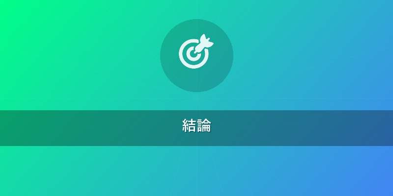
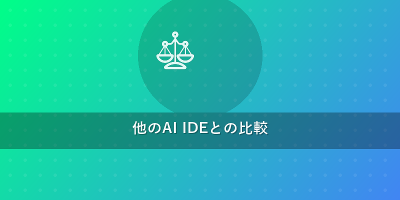
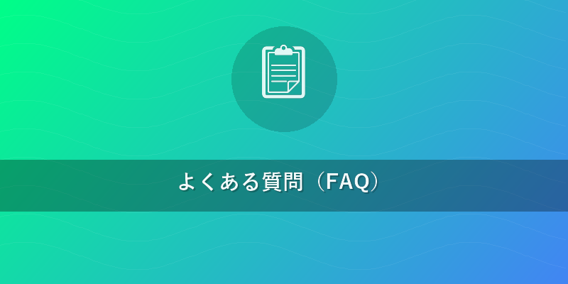

Antigravity 使い方 2026年版: AI IDE完全ガイド
この記事でわかること
- Google Antigravityの基本的な導入方法から高度な活用法までを網羅的に習得できます。
- AIエージェントによる自律コーディング、Manager View、ブラウザ統合テストといった革新的な機能の実践的な活用法がわかります。
- 他の主要なAI IDE（Cursor、Windsurf、GitHub Copilot、Claude Code）との客観的な比較を通じて、Antigravityの優位性を理解し、最適な開発環境を選定できるようになります。

結論
Google Antigravityは、2026年において開発者のワークフローを根底から変革する、最先端のAI IDE（統合開発環境）です。マルチLLM（大規模言語モデル）対応、高度なAIエージェントによる自律コーディング、そしてGoogle Cloudとのシームレスな統合を特徴とし、コードの生成からデバッグ、テスト、デプロイまでをAIが強力にサポートします。本記事を読めば、Antigravityの導入から高度な活用法までを完全にマスターし、次世代の開発体験を今日から実現できます。
本題
Antigravityとは？次世代AI IDEの概要
Google Antigravityは、Googleが長年培ってきたAI技術を結集した、開発者向けの革新的な統合開発環境です。単なるコードエディタの枠を超え、AIが開発プロセスのあらゆる側面を自律的に支援することで、開発効率と品質を劇的に向上させます。2026年現在、Antigravityは以下の主要な特徴を持っています。
- 柔軟な利用形態: VS Code拡張機能、スタンドアロンのデスクトップアプリケーション、そしてフルマネージドのクラウドIDEとして提供され、あらゆる開発環境に対応します。
- マルチLLM対応: Gemini Ultra、PaLM-E、Code-Davinci 4などの最先端のLLMをプロジェクトやタスクに応じて切り替えて利用できます。これにより、特定の言語やタスクに最適なAIモデルを選択し、最高のパフォーマンスを引き出すことが可能です。
- 高度なAIエージェント: コードの生成、リファクタリング、デバッグ、テストケースの作成、さらにはプロジェクトの設計提案まで、開発プロセスのあらゆる段階でAIエージェントが自律的に動作します。
- Google Cloudとのシームレスな連携: Cloud Run、Cloud Functions、Kubernetes EngineなどのGoogle Cloudサービスへのデプロイや監視がAntigravity内から直接行え、開発から運用までを一気通貫でサポートします。
Antigravityの導入と初期設定（Antigravity 始め方/インストール）
Antigravityを使い始めるのは非常に簡単です。ここでは、主要な導入方法と初期設定の手順を説明します。{{internal_link:Antigravityの環境構築}}の詳細ガイドも参考にしてください。
1. クラウドIDE版 Antigravity の導入
Google Cloud Consoleから直接Antigravityのワークスペースを立ち上げることで、環境構築の手間なくすぐに開発を開始できます。
- Google Cloud プロジェクトの選択: Google Cloud Consoleにログインし、既存のプロジェクトを選択するか、新規に作成します。
- Antigravity サービスの有効化: ナビゲーションメニューから「Antigravity」を検索し、サービスを有効化します。
- ワークスペースの作成: 「ワークスペースを作成」をクリックし、プロジェクト名、リージョン、使用するVMタイプ（CPU/GPU、メモリなど）を設定します。
- リポジトリの接続: GitHub、GitLab、Bitbucketなどの既存のリポジトリURLを指定してクローンするか、空のワークスペースを作成します。
- 初回セットアップ: ワークスペース起動後、プロンプトに従ってデフォルトのAIモデル（推奨: Gemini Ultra）を選択し、基本的なコードスタイル（Prettier, ESLintなど）を設定します。必要な言語ランタイムやSDKはAIが自動的に検出し、インストールを提案します。
2. VS Code拡張版 Antigravity の導入
普段使い慣れたVS CodeでAntigravityのAI機能を活用したい場合は、拡張機能をインストールします。
- VS Codeの起動: Visual Studio Codeを起動します。
- 拡張機能の検索: 左サイドバーの拡張機能アイコン（四角いブロック）をクリックし、検索バーに「Google Antigravity Extension」と入力します。
- インストール: 検索結果から「Google Antigravity Extension」を選択し、「インストール」ボタンをクリックします。
- Googleアカウントで認証: インストール後、Antigravityの機能を利用するために、Googleアカウントでの認証を求められます。指示に従って認証プロセスを完了します。
- クラウドプロジェクトとの連携: VS CodeのAntigravityサイドバーから、Google Cloudプロジェクトを選択し、AIモデルの設定などを行います。
3. 初回起動時の共通設定
どちらのバージョンを利用する場合でも、以下の設定を確認することで、より快適なAntigravity 使い方を実現できます。
- AIモデルの選択: Antigravityの設定メニュー（
Ctrl+,またはCmd+,で設定画面を開き、「Antigravity」で検索）から、プロジェクトの特性に合わせたAIモデルを選択します。初期段階ではGemini Ultraが推奨されます。 - AIアシストレベルの設定: AIの介入度合い（自動補完の積極性、リファクタリング提案の頻度など）を調整できます。初心者の場合は「高」、上級者は「中」など、好みに合わせて変更しましょう。
- 既存プロジェクトのインポート: 「ファイル」>「フォルダを開く」から既存のプロジェクトフォルダを選択すると、AIがプロジェクト構造を解析し、最適な開発環境を自動で構築します。
Antigravityを使った基本的な開発ワークフロー（Antigravity 使い方 初心者向け）
ここでは、Antigravityを活用した基本的な開発サイクルを具体的な操作手順とともにご紹介します。
1. AIによるコード補完と生成
- リアルタイム補完: エディタでコードを入力し始めると、AIがリアルタイムで文脈に応じたコード補完候補を提示します。
Tabキーで受け入れることができます。 - 自然言語によるコード生成: コメントで「
// Implement a Python function to sort a list of dictionaries by a specific key.」のように要件を記述し、Ctrl+Enter（またはCmd+Enter）を押すと、AIが関数全体を生成します。 - コードスニペットの生成: 特定のパターンやライブラリの使い方を思い出せない場合、チャットウィンドウで「
How to connect to Firestore in Python?」と質問すると、関連するコードスニペットを生成してくれます。
2. スマートなデバッグ支援
- リアルタイムバグ検出: コードを記述中に、AIが潜在的なバグ（論理エラー、型不一致など）をリアルタイムで検出し、エディタ上で波線や警告アイコンで表示します。ホバーすると修正案が表示されます。
- スタックトレース分析: プログラムがクラッシュした場合、コンソールに表示されるスタックトレースをAIが分析し、根本原因を特定して解決策を提案します。
- テストケースの自動生成: 特定の関数やモジュールを選択し、コンテキストメニューから「AIでテストを生成」を選択すると、そのコードの単体テストケースを自動で生成します。
3. リファクタリングと最適化
- コード品質向上提案: コードブロックを選択し、AIチャットに「
Refactor this code for better readability and performance.」と指示すると、AIがより効率的でクリーンなコードにリファクタリングした提案を行います。 - 不要コードの削除: AIが未使用の変数、関数、または冗長なロジックを検出し、削除を提案します。
- セキュリティ脆弱性スキャン: プロジェクト全体をスキャンし、OWASP Top 10などの一般的なセキュリティ脆弱性を特定し、修正案を提示します。
4. バージョン管理との連携
- コミットメッセージ生成: 変更をステージングした後、Gitタブで「AIでコミットメッセージを生成」ボタンをクリックすると、AIが変更内容を要約した適切なコミットメッセージを提案します。
- プルリクエストレビュー: 他のメンバーからのプルリクエストをAntigravity内で開くと、AIがコードの変更点を分析し、潜在的なバグ、スタイルガイド違反、改善点などをレビューコメントとして提案します。
マルチLLM対応とモデル選択のベストプラクティス
Antigravityの最大の強みの一つは、複数のLLMを柔軟に使い分けられる点です。プロジェクトの性質やタスクに応じて最適なモデルを選択することで、AIアシストの精度と効率を最大化できます。
-
モデル切り替えの手順
- Antigravityの左下にあるステータスバー、または設定メニュー（
Ctrl+,またはCmd+,> 「Antigravity」>「AI Models」）から、現在アクティブなLLMが表示されます。 - クリックまたは設定画面から、利用可能なLLM（例: Gemini Ultra, PaLM-E, Code-Davinci 4）のリストが表示されます。
- ドロップダウンリストから、使用したいLLMを選択します。モデルが切り替わると、AIアシストの挙動が変化します。
- Antigravityの左下にあるステータスバー、または設定メニュー（
-
モデルごとの得意分野と利用シーン
- Gemini Ultra: 最も汎用性が高く、複雑なロジック生成、多言語対応、高度な問題解決に優れています。プロジェクト全体でのAIアシストのデフォルトとして最適です。
- PaLM-E: 特定のプログラミング言語（Python, Javaなど）やフレームワークに特化したトレーニングを受けている場合があります。特定の言語でのコード品質やパフォーマンスが重要な場合に切り替えることで、より精度の高い提案が期待できます。
- Code-Davinci 4 (または類似の専門モデル): 大規模なコードベースのリファクタリング、レガシーコードの解析、特定のアルゴリズム最適化など、非常に専門的なタスクに特化しています。特定のパフォーマンスボトルネック解消などに活用できます。

他のAI IDEとの比較
Antigravityの優位性を理解するため、他の主要なAI IDEやAIアシスタントツールとの比較を表形式でまとめました。2026年時点の機能を想定しています。
| IDE名 | 提供元 | 主な特徴 | AIエージェント機能 | マルチLLM対応 | クラウド連携 | 価格体系 | Antigravityとの比較 |
|---|---|---|---|---|---|---|---|
| Antigravity | VS Code拡張/クラウドIDE/スタンドアロン | 高度な自律エージェント | ✓ | 高度 | サブスクリプション/従量課金 | 最先端のAI統合と自律性、マルチLLMによる柔軟性が最大の特徴。 | |
| Cursor | Cursor, Inc. | VS Codeフォーク、エディタ内チャット | 部分的 (AIによる対話アシスト) | × | 部分的 | 無料版/サブスクリプション | エディタ中心のAI対話に強みを持つが、自律性は限定的。 |
| Windsurf | Microsoft | クラウドネイティブ、エージェント指向のIDE | 高度な自律エージェント | 部分的 | 高度 | サブスクリプション | クラウドネイティブ開発に特化。Antigravityはより幅広い用途に対応。 |
| GitHub Copilot Chat | GitHub/Microsoft | VS Code拡張、コード補完、チャット対話 | 部分的 (IDE連携) | × | 部分的 | サブスクリプション | 最も普及したコード補完ツール。Antigravityはエージェント機能が高度。 |
| Claude Code | Anthropic | 倫理的AI、安全なコード生成、説明性重視 | 高度 (安全性重視) | × | 部分的 | サブスクリプション | 安全性と倫理に強み。Antigravityは機能の網羅性が高い。 |
エージェント機能活用テクニック
Antigravityの真価は、その強力なAIエージェント機能と、それを管理・指揮するManager Viewにあります。ここでは、これらの機能を最大限に活用し、開発を加速させる実践的なテクニックを紹介します。
1. 自律コーディング機能の最大化
AntigravityのAIエージェントは、人間が設定した目標に対して自律的にコードを生成し、デバッグし、テストを実行する能力を持っています。
- Manager Viewでのタスク定義: Manager View（詳細は後述）を開き、プロジェクトの目標、設計要件、使用する技術スタック、期待する出力形式などを詳細に記述します。「ユーザー認証機能を実装する（Next.js + Firebase Auth）」のように具体的に指示します。
- エージェントへの段階的指示: いきなり全てを任せるのではなく、「まず認証画面のUIを生成」「次にFirebaseとの連携ロジックを記述」「最後にテストコードを生成」のように、タスクを細分化して指示を与えることで、AIの精度を高めます。
- 反復開発サイクル: エージェントが生成したコードをレビューし、不足している点や改善すべき点があれば、具体的なフィードバックを与えます。AIはフィードバックを基にコードを修正・改善します。このサイクルを繰り返すことで、より高品質なコードが生成されます。
- ゴールシーク機能: 特定の目標（例: 「全てのテストがパスするようにコードを修正する」）を設定すると、エージェントが自動で複数の修正案を試行錯誤し、目標達成まで自律的に動作します。
2. Manager Viewを使いこなす
Manager Viewは、複数のAIエージェントをオーケストレーションし、プロジェクト全体の進捗を管理するためのAntigravity独自のインターフェースです。{{internal_link:Antigravity Manager View詳細}}でさらに詳しく解説しています。
- プロジェクトの全体像把握: Manager Viewを開くと、現在のプロジェクトの進捗状況、各AIエージェント（例: フロントエンドエージェント、バックエンドエージェント、テストエージェント）の活動、未解決の課題、ボトルネックなどがグラフィカルに表示されます。
- 複数のAIエージェントのオーケストレーション: フロントエンド開発、バックエンドAPIの実装、データベース設計、インフラ設定など、異なる専門分野を持つ複数のAIエージェントにそれぞれタスクを割り当て、連携を管理します。例えば、フロントエンドエージェントが生成したAPI呼び出しコードを、バックエンドエージェントが受け取ってAPIエンドポイントを実装するといった連携が可能です。
- 戦略的指示: 高レベルなビジネス要件や設計思想をManager Viewに入力することで、AIエージェントがそれらを具体的な開発タスクに分解し、実行計画を立案します。人間はより戦略的な指示に集中できます。
- 課題管理とフィードバック: AIエージェントが特定した課題や提案に対して、Manager Viewから直接承認、修正指示、または追加情報を提供できます。これにより、開発プロセスにおける人間の介入点を最適化します。
3. ブラウザ統合テストによる品質保証
Antigravityは、コード生成だけでなく、生成されたコードの品質保証においてもAIの力を最大限に活用します。特に、ブラウザ統合テスト機能は、Webアプリケーション開発において強力なツールとなります。
- E2Eテストの自動生成: AIがWebアプリケーションの操作シナリオ（ユーザー登録、ログイン、商品購入など）を解析し、PlaywrightやCypressなどのフレームワークに基づいたエンドツーエンド（E2E）テストコードを自動で生成します。これにより、テストコード作成の手間が大幅に削減されます。
- ビジュアルリグレッションテスト: アプリケーションのUIに変更があった際、AIが自動的にスクリーンショットを撮影し、過去のバージョンと比較することで、意図しないUIの崩れや変更を検出します。これにより、デザインの一貫性を保ちながら開発を進められます。
- CI/CDパイプラインとの連携: Antigravityは、生成・実行されたテスト結果をCI/CDパイプラインに自動でフィードバックします。テスト失敗時には、AIがエラーログを分析し、潜在的な原因箇所や修正提案を開発者に通知します。
- テストケースの最適化: AIがコードカバレッジを分析し、テストが不足している箇所や冗長なテストケースを特定します。これにより、より効率的で網羅性の高いテストスイートを維持できます。

よくある質問（FAQ）
Q1: Antigravityはどんなプロジェクトに適していますか？
A1: Antigravityは、Webアプリケーション（フロントエンド/バックエンド）、モバイルアプリ、機械学習モデル開発、API開発など、あらゆる規模と種類のソフトウェアプロジェクトに適しています。特に、複雑なロジックやAIの活用が求められるプロジェクト、迅速なプロトタイピングが必要なケース、または大規模チームでの開発効率向上を目指す場合にその真価を発揮します。
Q2: 既存のVS Code環境からAntigravityへ移行するにはどうすればよいですか？
A2: 既存のVS Code環境からの移行は非常にスムーズです。VS Code Marketplaceから「Google Antigravity Extension」をインストールし、Googleアカウントで認証するだけで、すぐにAI機能を利用開始できます。既存のプロジェクトフォルダを開くと、AntigravityのAIがプロジェクト構造を解析し、最適な開発アシストを提供します。設定やキーバインドも既存のものを引き継ぎつつ、Antigravityの革新的なAI機能を活用できます。
Q3: Antigravityのセキュリティ対策はどうなっていますか？
A3: Antigravityは、Google Cloudの堅牢なインフラストラクチャを基盤としており、業界最高水準のセキュリティ対策が施されています。お客様のコードやデータは厳重に保護され、AIモデルへのデータ送信は匿名化・集計化されており、個人のコードが学習データとして悪用されることはありません。また、機密性の高いプロジェクト向けには、プライベートな環境で専用のAIモデルをデプロイするオプションも提供されています。
おすすめサービス・ツール
この記事で紹介した内容を実践するために、以下のサービスがおすすめです。
- Antigravity - Google Antigravityを試す
- Amazon - AmazonでAI開発関連書籍を探す
- 楽天ブックス - 楽天でAI開発関連書籍を探す
※ 上記リンクからご利用いただくと、サイト運営の支援になります。
まとめ
Google Antigravityは、2026年のソフトウェア開発を再定義する、革新的なAI IDEです。本記事では、Antigravity 使い方として、その導入方法から、AIによるコード生成、デバッグ、リファクタリング、さらには自律コーディング、Manager View、ブラウザ統合テストといった高度なエージェント機能の活用テクニックまでを網羅的に解説しました。他のAI IDEとの比較からも明らかなように、Antigravityは最先端のマルチLLM対応と高度な自律エージェント機能を備え、開発者の生産性とコード品質をかつてないレベルで向上させます。今日からAntigravityを導入し、AIが開発を支援する次世代のワークフローを体験してみてください。あなたの開発スタイルは、きっと大きく変わるはずです。